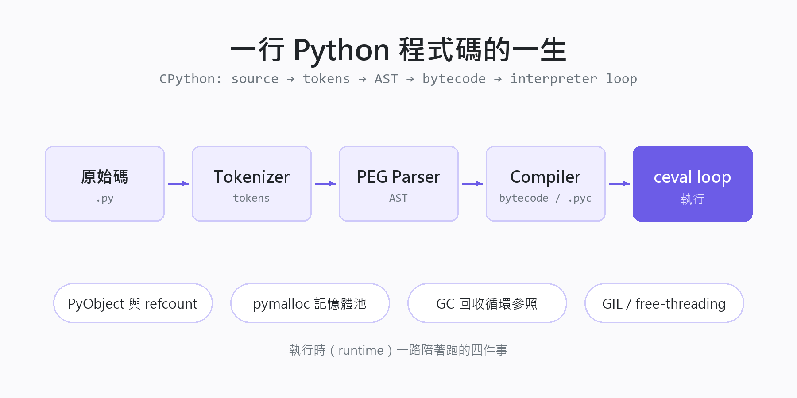
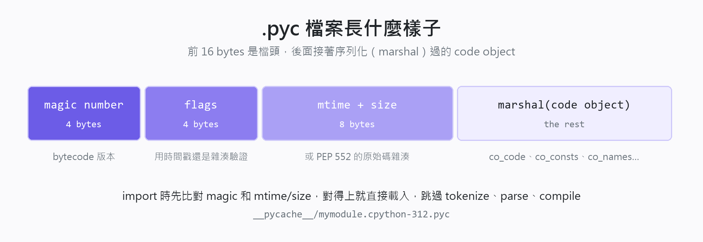
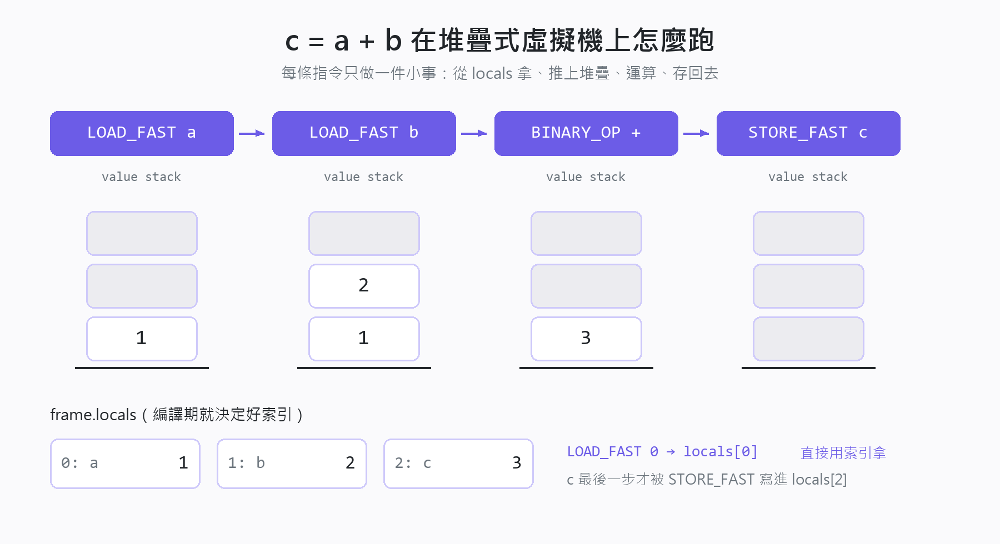
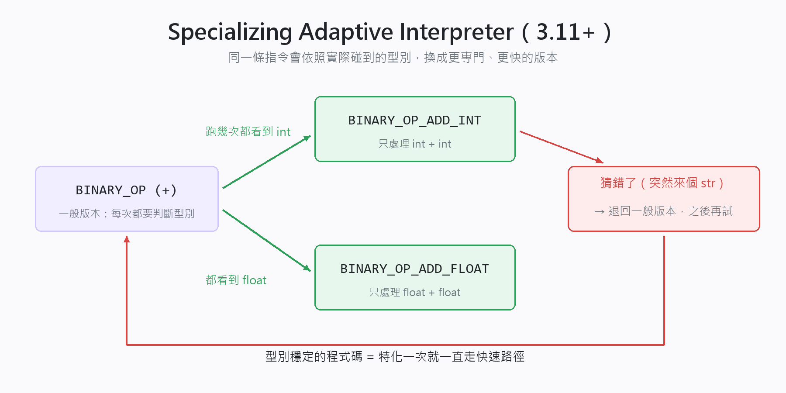
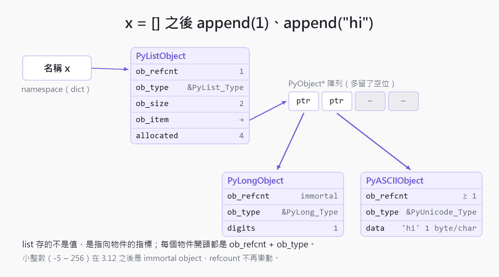
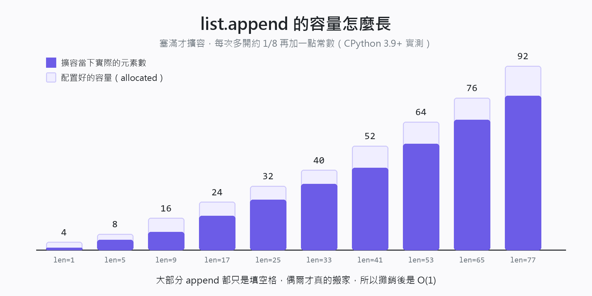
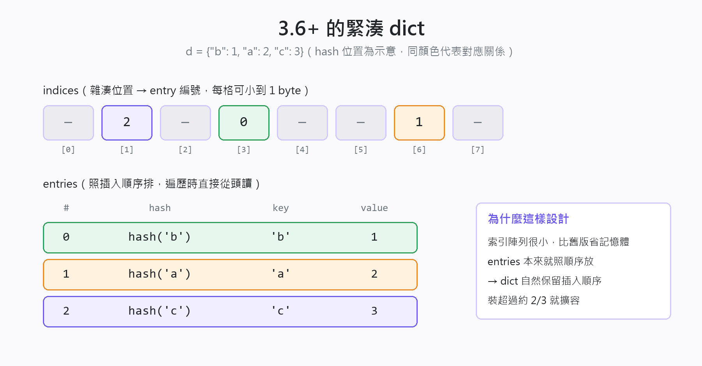
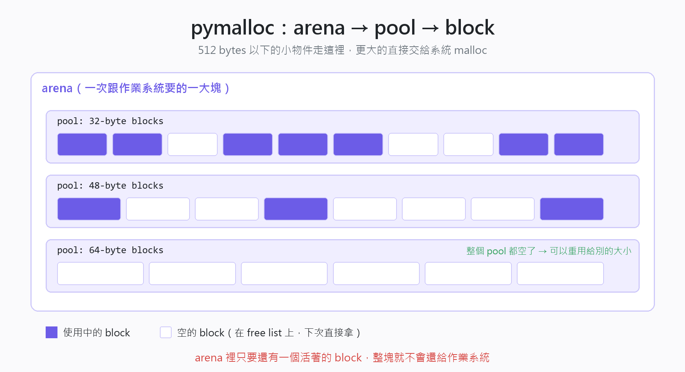
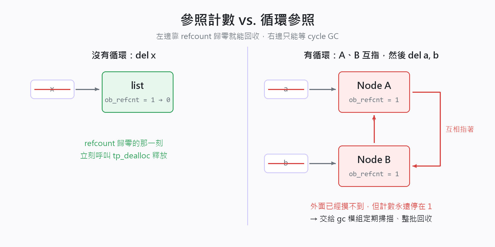
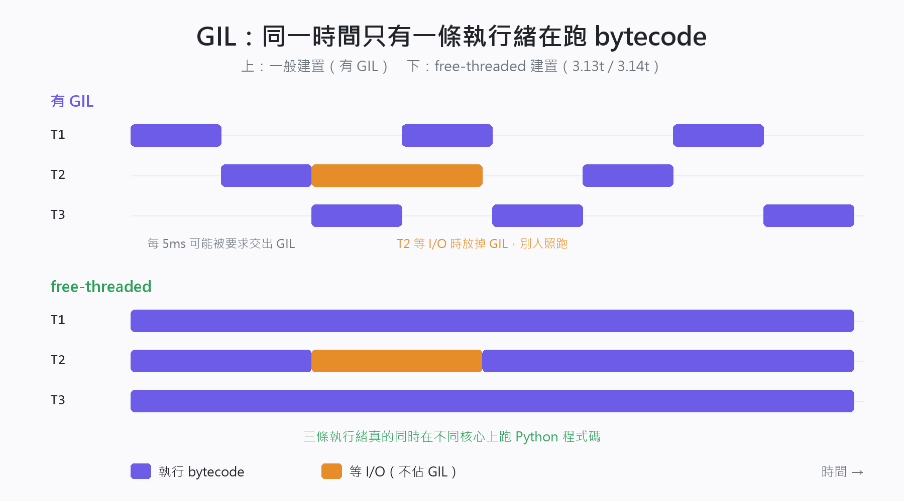

TL;DR
這篇是我整理的 Python 筆記，從怎麼寫一路講到 CPython 裡面在幹嘛。前半段是基本語法、常用套件、實務上大家真的在用的寫法，後半段拆開 CPython，看 bytecode、物件、記憶體、GC 和 GIL 怎麼運作。只想查套件可以直接跳 Part 2，對底層有興趣的從 Part 4 開始看就好。
前言：Python 沒有你以為的那麼「直譯」
學 Python 的第一堂課，大概都聽過「Python 是直譯式語言」這句話。這句話不算錯，但很容易讓人誤會很久。
你打 python app.py 按下 Enter，CPython 其實先做的是編譯。它把原始碼切成 token，組成抽象語法樹（AST），再編成 bytecode，最後才丟給一個 C 寫的迴圈一條一條跑。專案裡那個常被加進 .gitignore 的 __pycache__，裡面的 .pyc 就是編譯好存起來的 bytecode。
所以比較精確的說法是：Python 會先編譯成虛擬機指令，再直譯那些指令。聽起來很學術，但後面很多「為什麼會這樣」都會繞回這裡，像是 local 變數為什麼比 global 快、3.11 為什麼突然快了一截、多執行緒跑運算為什麼沒變快。

一行 Python 程式碼從原始碼到被執行的路徑，下排是執行時一直在背後運作的四個機制。前三段我用寫程式的人的角度講，最後一段換到 CPython 的角度，把前面那些規則的原因補回來。版本以 CPython 3.12 到 3.14 為主，有差異的地方我會標出來。
Part 1：基本語法
變數不是盒子，是名牌
很多教材會說「變數是裝資料的盒子」，這個比喻在 Python 裡會害你踩坑。比較接近的說法是名牌：a = [1, 2] 是先做出一個 list，再把 a 這張名牌貼上去。
a = [1, 2]
b = a # 不是複製，是再貼一張名牌到同一個物件
b.append(3)
print(a) # [1, 2, 3]
print(a is b) # True：同一個物件
c = a.copy() # 淺複製（shallow copy）才是新物件
print(a == c, a is c) # True False這也是 == 跟 is 的差別。== 問的是兩個值相不相等（背後呼叫 __eq__），is 問的是是不是同一個物件。平常除了 x is None 這種跟單例比較的情況，用 == 就對了。
型別是跟著物件走的，名稱本身沒有型別。所以同一個名稱可以先綁 int 再綁 str，這叫動態型別。可是 "1" + 1 會直接噴 TypeError，Python 不會幫你偷偷轉，這叫強型別。這兩個概念常被混在一起講，其實是兩回事。
幾個基本型別有些小地方值得知道。int 沒有上限，2 ** 1000 照算不誤。float 就是 C 的 double，所以 0.1 + 0.2 != 0.3，算錢請用 decimal.Decimal。str 是不可變的 Unicode 字串，bytes 則是原始位元組，兩者之間要自己 encode() / decode()，碰到檔案和網路封包時特別常用。還有一個冷知識，bool 其實是 int 的子類別，True + True 會得到 2。
內建容器：list、tuple、dict、set
日常寫 Python，大部分資料都裝在這四種容器裡。要選哪個，我通常只想兩件事：資料會不會改，以及之後要怎麼找。
list 是有序、可變的，從尾巴加減元素很快，但 insert(0, x) 和 x in lst 都要整排掃過去。tuple 是不可變的 list，適合放「一筆結構固定的資料」，也能拿來當 dict 的 key。dict 是雜湊表，用 key 找 value 平均是 O(1)，而且從 3.7 開始，保留插入順序已經寫進語言規格。set 就是只有 key 的 dict，判斷東西在不在裡面很快，交集聯集也是一行的事。
users = {"alice": 30, "bob": 25}
users.get("carol", 0) # 找不到給預設值，不丟 KeyError
users.setdefault("carol", 20)
for name, age in users.items(): # 同時拿 key 和 value
print(f"{name=} {age=}") # 3.8+ 的 f-string 除錯寫法
seen = set()
ips = ["10.0.0.1", "10.0.0.2", "10.0.0.1"]
unique = [ip for ip in ips if not (ip in seen or seen.add(ip))] # 保序去重
a, *rest, last = [1, 2, 3, 4, 5] # 解包（unpacking）
merged = {**users, "dave": 40} # dict 合併；3.9+ 也可以寫 users | {"dave": 40}實務上很常見的一個慢點：在一個很長的 list 上一直做 in 查詢。資料量一大就會拖很久，換成 set 或 dict 馬上就好了，效果比什麼微優化都明顯。
流程控制與 match
if、for、while 應該不用多講，這裡挑幾個我覺得比較少人用、但用了很順手的。
第一個是真假值判斷。空的容器、0、""、None 都算假，所以寫 if items: 就夠了，不用寫 if len(items) > 0:。第二個是 for ... else，else 只有在迴圈沒被 break 時才會跑，拿來處理「整圈找完都沒找到」剛好。第三個是 3.8 加入的海象運算子 :=，可以在判斷式裡順便賦值。
最後是 3.10 的 match。很多人把它當成別的語言的 switch，但它能做的事多很多，它可以直接拆開資料結構來比對：
while (line := f.readline()):
handle(line)
def handle_event(event: dict):
match event:
case {"type": "login", "user": str(user)}:
print(f"{user} 登入")
case {"type": "error", "code": int(code)} if code >= 500:
print(f"伺服器錯誤 {code}")
case {"type": t}:
print(f"未處理的事件 {t}")
case _:
print("格式不對")函式、參數與作用域
Python 的函式本身也是物件，可以存進變數、當參數傳、當回傳值。後面講的裝飾器、callback、functools，全部都建立在這件事上。
參數的寫法比想像中多變，一個函式簽名裡可以同時出現五種：
def f(pos_only, /, normal, *args, kw_only, **kwargs):
...
# pos_only：只能用位置傳（3.8+ 的 /）
# normal：位置或關鍵字都行
# *args：多出來的位置參數，收成 tuple
# kw_only：* 之後的只能用關鍵字傳
# **kwargs：多出來的關鍵字參數，收成 dict接著是幾乎每個人都踩過的坑，把可變物件當預設值：
def add_item(item, bucket=[]): # 錯：預設值只在 def 執行時建立一次
bucket.append(item)
return bucket
add_item(1) # [1]
add_item(2) # [1, 2] ← 共用同一個 list
def add_item(item, bucket=None): # 對：用 None 當哨兵
if bucket is None:
bucket = []
bucket.append(item)
return bucket這其實不是 bug。def 是一行會被執行的陳述式，預設值在執行到那一行時算一次，然後就存在函式物件的 __defaults__ 裡，之後每次呼叫都拿同一個。
作用域的部分，Python 找名稱的順序是 Local、Enclosing、Global、Builtins，簡稱 LEGB。想在內層函式裡改外層的變數要先講清楚，改模組層級用 global，改外層函式的用 nonlocal。
內層函式記住外層的變數，就是閉包（closure）。裝飾器（decorator）說穿了就是「吃一個函式、吐一個新函式」，@ 只是語法糖：
import functools
import time
def timed(func):
@functools.wraps(func) # 保留原函式的名稱與 docstring
def wrapper(*args, **kwargs):
start = time.perf_counter()
try:
return func(*args, **kwargs)
finally:
print(f"{func.__name__} 花了 {time.perf_counter() - start:.3f}s")
return wrapper
@timed # 等同於 fetch = timed(fetch)
def fetch(url): ...推導式、迭代器與生成器
推導式（comprehension）大概是 Python 最有辨識度的寫法，一看就知道是 Python：
squares = [x * x for x in range(10) if x % 2 == 0]
index = {name: i for i, name in enumerate(names)}
exts = {p.suffix for p in paths}
total = sum(x * x for x in range(10**7)) # 生成器運算式：不建 list，省記憶體它背後是迭代協定（iterator protocol）。能被 iter() 轉出一個 iterator 的東西叫 iterable，像 list、dict、檔案。iterator 則是每次 next() 吐一個值，吐完就丟 StopIteration。你寫的 for x in obj，實際上就是先 iter(obj)，再一直 next() 到 StopIteration 為止。
要自己寫 iterator，最省事的方法是生成器（generator）。函式裡只要出現 yield，呼叫它就不會馬上跑，而是拿到一個可以一直往下推的「暫停中的函式」：
def read_large_log(path):
with open(path, encoding="utf-8") as f:
for line in f:
if "ERROR" in line:
yield line.rstrip()
for err in read_large_log("app.log"): # 一次只有一行在記憶體裡
print(err)生成器真正好用的地方是惰性求值（lazy evaluation），資料要用到才產生。處理幾 GB 的 log 或串流資料時，用 list 一次全讀進來記憶體很容易爆，用生成器一次只有一行在記憶體裡。標準函式庫的 itertools 基本上就是一整套生成器積木，值得花一個下午翻一遍。
類別與資料模型（dunder methods）
講到 Python 的 OOP，我覺得最該先懂的是資料模型（data model），繼承反而沒那麼重要。只要實作特定的雙底線方法（dunder method），你的物件就能直接用 +、len()、for、with 這些內建語法：
class Vector:
def __init__(self, x: float, y: float):
self.x, self.y = x, y
def __repr__(self): # print / 除錯時看到的樣子
return f"Vector({self.x}, {self.y})"
def __add__(self, other): # 讓 v1 + v2 能用
return Vector(self.x + other.x, self.y + other.y)
def __eq__(self, other): # 讓 == 能用
return (self.x, self.y) == (other.x, other.y)
def __len__(self): ... # len(v)
def __iter__(self): ... # for c in v
def __getitem__(self, i): ... # v[0]
def __enter__(self): ... # with v:
def __call__(self): ... # v()大家常說的「Pythonic」，很大一部分就是在講這個。比起寫一個 v.getLength()，讓 len(v) 直接能用會自然很多。
類別裡另外幾個常用的裝飾器也順便提一下。@property 可以把方法包成屬性，等到需要檢查或計算的時候再用就好，不用一開始就幫每個欄位寫 getter/setter。@classmethod 拿到的是類別本身，很適合寫 User.from_json(data) 這種替代建構子。@staticmethod 則是單純放在類別裡、不需要 self 的函式。還有 super()，它呼叫的是 MRO 上的下一個類別，不一定是你以為的父類別，多重繼承的時候差很多，Part 4 會再講。
例外處理與 with
Python 社群比較偏好 EAFP（Easier to Ask Forgiveness than Permission），先做了再說，出錯再處理。另一種風格 LBYL（Look Before You Leap）是先檢查一堆條件才動手，在 Python 裡比較少見。
try:
config = json.loads(path.read_text(encoding="utf-8"))
except FileNotFoundError:
config = {}
except json.JSONDecodeError as e:
raise ConfigError(f"{path} 格式錯誤") from e # 保留原始例外鏈
else:
validate(config) # 沒出錯才跑
finally:
cleanup() # 一定會跑有兩個習慣我覺得一定要養成。一是不要寫裸的 except:，它連 Ctrl+C 的 KeyboardInterrupt 都會吃掉，至少要寫 except Exception，能寫具體的例外更好。二是自訂例外就繼承 Exception，用類別階層分出錯誤種類，呼叫的人才接得準。
3.11 另外加了 ExceptionGroup 和 except*，專門處理好幾個錯誤同時發生的情況，例如 asyncio 的 TaskGroup 裡一次掛了好幾個 task。
with 則是用來保證資源一定會被收回。檔案、鎖、資料庫連線、暫存目錄，能用 with 的都用 with。想自己寫一個 context manager，最快的是 contextlib.contextmanager：
from contextlib import contextmanager
@contextmanager
def chdir_temp(path):
old = os.getcwd()
os.chdir(path)
try:
yield
finally:
os.chdir(old) # 中間出例外也會跑回來（3.11 之後標準函式庫已經有 contextlib.chdir 了，這裡只是示範寫法。）
Part 2：常用套件
Python 一直標榜「batteries included」，標準函式庫本身就很大。很多需求在 pip install 之前，先翻一下標準函式庫常常就有了。
標準函式庫：一定要熟的那幾個
這幾個我覺得值得熟到不用查文件：
- pathlib，處理路徑，取代
os.path那一堆字串拼接。 - collections，最常用到的大概是
Counter、defaultdict和兩端都能快速進出的deque。 - itertools，
chain、groupby、product、islice，3.12 還多了batched。 - functools，
cache做記憶化很方便，partial和wraps也很常用。 - dataclasses 和 typing，Part 3 會講怎麼用。
- json、csv、tomllib，常見格式的讀寫。tomllib 是 3.11 加的，可以直接讀
pyproject.toml。 - re，正規表示式。
- datetime 加 zoneinfo，處理時間和時區。有 zoneinfo 之後就不太需要裝 pytz 了。
- logging、argparse、subprocess，寫命令列小工具基本上就靠這三個。
- concurrent.futures、threading、multiprocessing、asyncio，併發相關，怎麼選放在 Part 3。
- sqlite3，內建的嵌入式資料庫，做小工具、快取、離線分析都很好用，很多人不知道它不用另外裝。
- hashlib、hmac、secrets，雜湊和安全亂數。產生 token 請用 secrets，不要用 random。
- struct，照 C 結構打包、解包 bytes，解析二進位格式一定會用到。
- unittest 和 doctest，內建的測試工具，不過實務上大多數人會改用 pytest。
from collections import Counter
from pathlib import Path
words = Path("article.txt").read_text(encoding="utf-8").split()
print(Counter(words).most_common(5))
for py in Path("src").rglob("*.py"):
print(py.relative_to("src"), py.stat().st_size)資料處理與科學計算
這一區的地基是 NumPy，幾乎所有科學計算套件都建在它的陣列上。表格資料大家最熟的是 pandas，資料量大的時候可以看看 Polars，它是 Rust 寫的，會用滿多核心，也支援 lazy 查詢，很多情況下比 pandas 快不少。
畫圖的話，Matplotlib 是基本款，Seaborn 讓統計圖好看一點，要互動圖就用 Plotly。數值方法和統計找 SciPy，傳統機器學習找 scikit-learn，深度學習現在主流是 PyTorch。探索資料的時候，大家多半開 Jupyter 筆記本。
這些套件有個共通點，真正在跑運算的是底下的 C、C++、Fortran 或 Rust，Python 只負責描述要做什麼。所以「Python 很慢」跟「Python 是 AI 最主流的語言」兩句話可以同時成立。
Web 與網路
發 HTTP 請求，最多人用的是 requests。如果需要 async 或 HTTP/2，可以換成介面很像的 httpx。
框架的部分，寫 API 可以先看 FastAPI，它用型別提示驅動，文件會自動產生。想要輕量自由一點用 Flask，要 ORM、後台、登入驗證全部打包好就選 Django。FastAPI 底下做資料驗證的是 Pydantic，單獨拿來驗設定檔也很好用。資料庫的部分可以看 SQLAlchemy。
爬網頁、解析 HTML 用 Beautiful Soup 或 lxml，遇到要跑 JavaScript 的頁面就要開瀏覽器了，用 Playwright 或 Selenium。
開發工具鏈
這兩年工具鏈變化很大。uv 是 Astral 用 Rust 寫的套件與專案管理工具，速度快到有點誇張，Python 版本、虛擬環境、依賴鎖定一手包辦。官方內建的 pip 加 venv 還是到哪都能用，不想多裝東西就用它們。
同一家的 Ruff 是 linter 兼 formatter，以前要裝 flake8、isort、Black 三套的事，現在一套差不多就搞定。型別檢查用 mypy 或 Pyright，測試用 pytest，再用 pre-commit 把這些檢查掛在 commit 之前跑。
寫命令列工具的話，rich 讓終端輸出變漂亮，參數解析可以用 Typer 或 Click。
資安常用
資安圈幾乎人人都會寫 Python，分析樣本、寫自動化、驗證 PoC 都用它。以防禦和研究來說，我比較常看到這些：
- cryptography，正規的密碼學函式庫。加密這件事千萬不要自己發明。
- Scapy，組封包、拆封包，做流量分析和協定研究。
- pefile 和 LIEF，解析 PE、ELF 這類執行檔格式，分析惡意程式的第一步。
- yara-python，用 YARA 規則比對樣本特徵。
- Capstone 和 Unicorn，前者反組譯，後者模擬 CPU 執行。
- pwntools，打 CTF 必備。
- Volatility 3，記憶體鑑識。
Part 3：實務常用方法
會語法跟寫得出好維護的專案，中間還差很多「沒人特別教，但大家都這樣做」的習慣。這段整理幾個我覺得最值得早點養成的。
虛擬環境與 pyproject.toml
第一條：每個專案開一個自己的虛擬環境。全部裝在系統的 Python 裡，遲早會遇到兩個專案要的版本打架。
# 官方內建的做法
python -m venv .venv
source .venv/bin/activate # Windows: .venv\Scripts\activate
pip install requests
# 用 uv 的做法
uv init my-tool
uv add requests
uv run python main.py # 自動建立並使用 .venv專案設定現在都集中在 pyproject.toml（PEP 518 和 PEP 621），名稱、版本、依賴、各種工具的設定都放這裡。requirements.txt 還是有人在用，不過比較常是部署時鎖版本用的。
[project]
name = "my-tool"
version = "0.1.0"
requires-python = ">=3.12"
dependencies = ["httpx>=0.27", "pydantic>=2"]
[tool.ruff]
line-length = 100順便提一個新手常問的：if __name__ == "__main__": 到底在幹嘛？模組被 import 的時候 __name__ 是模組名稱，直接執行的時候才會是 "__main__"。把程式入口包在這個 if 裡，同一個檔案就能被別人 import，也能自己單獨跑。
型別提示 + 靜態檢查
先講一個很多人誤會的地方：型別提示（type hints）在執行時不會被檢查。你寫了 x: int，傳一個 str 進去程式照樣跑。它真正的用處是讓 mypy、Pyright 和 IDE 在你執行之前就先抓到錯。
from collections.abc import Iterable
def top_n(scores: dict[str, int], n: int = 3) -> list[tuple[str, int]]:
return sorted(scores.items(), key=lambda kv: kv[1], reverse=True)[:n]
def first[T](items: Iterable[T]) -> T | None: # 3.12+ 的泛型語法（PEP 695）
return next(iter(items), None)
type UserId = int # 3.12+ 的型別別名3.14 開始 annotation 預設改成延遲求值（PEP 649、PEP 749），參照還沒定義的類別時不用再加引號了。我自己的建議是，對外公開的函式介面一定寫型別，函式內部的小變數就交給工具推斷，不用每個都標。
dataclass 與資料建模
用 dict 傳資料一開始很方便，直到某天你打錯一個 key，debug 半天才發現。結構固定的資料，給它一個正式的型別會省很多麻煩：
from dataclasses import dataclass, field
@dataclass(frozen=True, slots=True) # frozen：不可變；slots：省記憶體、屬性存取更快
class Alert:
host: str
severity: int
tags: list[str] = field(default_factory=list) # 可變預設值要用 default_factory
a = Alert("web-01", 3)
print(a) # Alert(host='web-01', severity=3, tags=[])dataclass 和其他幾種寫法要怎麼挑，我的判斷方式大概是這樣。程式內部自己產生、信得過的資料，用 dataclass 就好。從外面進來的資料，像 API 請求、設定檔、使用者輸入，需要驗證和轉型，就用 Pydantic。如果只是很小、不會改、想像 tuple 一樣拆開用的紀錄，NamedTuple 剛好。資料本來就是 JSON dict、只是想讓型別檢查器看得懂的話，用 TypedDict。
檔案、路徑與編碼
from pathlib import Path
base = Path(__file__).resolve().parent # 以腳本所在位置為基準，不要依賴當前工作目錄
out = base / "output" / "report.json" # 用 / 組路徑，跨平台
out.parent.mkdir(parents=True, exist_ok=True)
out.write_text(json.dumps(data, ensure_ascii=False, indent=2), encoding="utf-8")讀寫文字檔請養成習慣寫 encoding="utf-8"。在 Windows 上不寫的話，預設可能會用 cp950 這類系統編碼，同一支程式換一台電腦就讀出亂碼，這種問題非常常見。官方也在把預設往 UTF-8 改（PEP 686），但自己寫清楚永遠不會錯。
logging 取代 print
用 print 抓 bug 十分鐘沒問題，但如果程式要在伺服器上跑三個月，還是換成 logging 吧。它有等級、時間、來源模組，而且不用改程式碼就能調整要輸出多少。
import logging
logger = logging.getLogger(__name__) # 每個模組一個 logger
def main():
logging.basicConfig(
level=logging.INFO,
format="%(asctime)s %(levelname)s %(name)s: %(message)s",
)
logger.info("start scanning %s", target) # 用 %s 參數，不要先 f-string 組好
try:
run()
except Exception:
logger.exception("scan failed") # 自動附上 traceback如果你寫的是給別人用的函式庫，只要 getLogger(__name__) 然後寫 log 就好，handler 留給應用程式的入口去設定。函式庫自己呼叫 basicConfig，會把使用者原本的設定蓋掉，蠻討人厭的。
併發：thread、process 還是 asyncio
Python 的效能問題，很多是併發工具選錯造成的。我選的時候只問一個問題：程式大部分時間在等什麼？
如果是在等網路、硬碟、資料庫這類 I/O，而且同時要處理的量不大，用 ThreadPoolExecutor 就夠了，執行緒在等 I/O 時會放掉 GIL，多開幾條一樣有效。如果同時要等的東西上千上萬，例如一次打幾千個連線，asyncio 的成本會低很多，因為它只用一條執行緒，靠事件迴圈切換。如果程式是在認真算東西（CPU 密集），就要用 ProcessPoolExecutor，每個 process 都有自己的直譯器和 GIL，或者把重的計算交給 NumPy 這種會自己放掉 GIL 的原生函式庫。
from concurrent.futures import ThreadPoolExecutor
import httpx
def fetch(url: str) -> int:
return httpx.get(url, timeout=10).status_code
with ThreadPoolExecutor(max_workers=16) as pool:
for url, code in zip(urls, pool.map(fetch, urls)):
print(url, code)import asyncio
import httpx
async def main(urls):
async with httpx.AsyncClient(timeout=10) as client:
async with asyncio.TaskGroup() as tg: # 3.11+：任一失敗會取消其他 task
tasks = [tg.create_task(client.get(u)) for u in urls]
return [t.result().status_code for t in tasks]
asyncio.run(main(urls))用 asyncio 有一件事一定要記得：async 函式裡不能呼叫會卡住的同步函式，像 time.sleep 或 requests.get。一呼叫，整個事件迴圈就停在那邊，其他幾千個任務全部跟著等。真的非用不可，就用 asyncio.to_thread() 丟去執行緒跑。
先量再優化
憑直覺猜效能瓶頸，通常會猜錯。我的建議是先量，工具也不難用。比較兩種小寫法用 timeit。想看整支程式時間花在哪，用 cProfile 跑一次（python -m cProfile -s cumtime app.py），再丟進 snakeviz 看圖會清楚很多。程式已經在跑、不想重啟的話，py-spy 可以直接掛上去取樣。記憶體的問題則用 tracemalloc 追是從哪裡配置出來的。
找到瓶頸之後，我通常照這個順序處理。先看演算法和資料結構有沒有選錯，例如 list 查找改成 set。再看有沒有重複算的東西可以用 functools.cache 存起來。接著看能不能交給 NumPy 或 Polars 做向量化，然後才考慮平行化。最後真的還不夠，才用 Cython 或 Rust（PyO3）重寫最熱的那一小段。
反過來說，還沒量過就開始改，就是大家常說的過早優化（premature optimization）。
Part 4：底層技術
前面都在講怎麼寫，這段來看 CPython 拿到程式碼之後到底做了什麼。CPython 是 Python 的官方實作，用 C 寫的。PyPy、GraalPy 這些是其他實作，下面講的細節都以 CPython 為準。
從原始碼到 bytecode
回到開頭那張圖。一個 .py 檔在執行前會經過四個步驟。
首先是 tokenizer 把文字切成一個個 token。Python 的縮排就是在這一步變成 INDENT 和 DEDENT token 的，所以縮排在 Python 裡是真的語法，不只是排版。接著 parser 把 token 組成 AST。3.9 開始 CPython 換成了 PEG parser（PEP 617），舊的 LL(1) parser 退場，後來 match 這種語法才比較好加進來。然後 compiler 建立符號表，決定每個名稱是 local、global 還是閉包變數，做一些像常數折疊的小優化，產出 bytecode 包成 code object。最後才是直譯器執行 code object。
每一步都可以在 Python 裡直接看到：
import ast, dis
print(ast.dump(ast.parse("c = a + b"), indent=2)) # 看 AST
def add(a, b):
c = a + b
return c
dis.dis(add) # 看 bytecode
print(add.__code__.co_varnames) # ('a', 'b', 'c')
print(add.__code__.co_consts)在 3.12 上 dis.dis(add) 大概會印出這樣（我把 offset 拿掉了，不同版本的指令名稱也會有些差異）：
RESUME 0
LOAD_FAST 0 (a)
LOAD_FAST 1 (b)
BINARY_OP 0 (+)
STORE_FAST 2 (c)
LOAD_FAST 2 (c)
RETURN_VALUE注意那個 LOAD_FAST。local 變數在編譯時就被分配好一個陣列索引，執行時直接用索引拿。global 變數用的是 LOAD_GLOBAL，要去查 dict。local 比 global 快，原因就是這兩條指令本身就不一樣。
再舉一個例子。3.12 之後 list、dict、set 推導式會直接內聯（inline）在所在的函式裡（PEP 709），不會再偷偷建一個隱藏的函式物件，所以推導式比以前快了一點。
至於 .pyc，被 import 的模組編譯完會存到 __pycache__/模組名.cpython-312.pyc。檔頭有 16 bytes，前 4 bytes 是 magic number，代表 bytecode 的版本，不同 Python 版本互不相容。後面是一組 flags，再來是原始檔的修改時間和大小，或是 PEP 552 定義的原始碼雜湊。下次 import 時原始檔沒變，就直接載入 bytecode，跳過前面三步。順帶一提，直接執行的那支主程式不會被寫成 .pyc。

前 16 bytes 的檔頭決定這份快取還能不能用。直譯器迴圈與 Specializing Adaptive Interpreter
bytecode 最後交給 Python/ceval.c 裡的求值迴圈執行。概念上，它就是一個很大的 switch：
# 虛擬碼：CPython 的 eval loop 概念上長這樣（實際是 C）
while True:
opcode, arg = next_instruction()
match opcode:
case LOAD_FAST: stack.push(frame.locals[arg])
case BINARY_OP: right, left = stack.pop(), stack.pop(); stack.push(left + right)
case RETURN_VALUE: return stack.pop()
...CPython 是堆疊式虛擬機（stack-based VM），指令從值堆疊（value stack）上拿運算元，算完再把結果推回去。每呼叫一次函式就有一個 frame，裡面放著這次呼叫的 local 變數、值堆疊，還有目前跑到哪一條指令。

四條指令跑完，值堆疊從空的又回到空的，結果留在 locals[2]。3.11 是一個很大的轉折。官方說平均比 3.10 快了大約 25%，主要來自 Faster CPython 計畫的幾項改動。
最核心的是 Specializing Adaptive Interpreter（PEP 659）。一條指令被執行幾次之後，直譯器會依照它實際碰到的型別，把它換成特化版本。例如 BINARY_OP 每次都是兩個 int 相加，就換成 BINARY_OP_ADD_INT，省掉一般化的型別判斷。LOAD_ATTR 如果一直碰到同樣形狀的物件，就換成直接從固定位置讀屬性的版本。哪天猜錯了，再退回一般版本。

特化是一直在進行的：猜對就走快速路徑，猜錯就退回來重新觀察。其他幾項也都很有感。frame 改成配置在每條執行緒專屬的一塊連續記憶體上，只有在 traceback 或 sys._getframe() 真的要用時，才會做出完整的 frame 物件。Python 函式呼叫 Python 函式，也不再往下遞迴 C 的堆疊，直接在同一個迴圈裡處理掉，呼叫成本因此降很多。還有一個叫零成本例外（zero-cost exceptions），try 區塊在沒出錯時完全不跑額外指令，真的出錯才去查例外表。
想看特化後的指令，可以用 dis.dis(func, adaptive=True)。從這裡也能推出一件事，型別穩定的程式碼會跑得比較快。同一個變數一下是 int 一下是 str，特化就會一直失敗。
PyObject：一切皆物件的真正意思
「Python 裡一切都是物件」這句話，在 C 的層面是照字面成立的。每個 Python 的值都是 heap 上的一塊記憶體，開頭一定是一個 PyObject 標頭：
typedef struct _object {
Py_ssize_t ob_refcnt; // 參照計數
PyTypeObject *ob_type; // 指向它的型別
} PyObject; // 一般（有 GIL）建置下的簡化版本ob_type 指向的型別物件（PyTypeObject）裡有一整排函式指標，負責怎麼相加（nb_add）、怎麼取屬性（tp_getattro）、怎麼算雜湊（tp_hash）、怎麼釋放（tp_dealloc）等等。直譯器跑 a + b 的時候，就是去看 a 的型別，呼叫它的加法函式指標。你在類別裡寫了 __add__，CPython 就會把對應的 slot 接到你寫的方法上。

list 裡存的是指向物件的指標，不是值本身。每個物件開頭都是 ob_refcnt 和 ob_type。看懂這張圖，很多 Python 的怪現象就說得通了。[[]] * 3 改一個、三個一起變，是因為被複製的是三個指向同一個 list 的指標。一個小整數在 64 位元系統上要 28 bytes（可以用 sys.getsizeof(1) 看），因為它是一個完整的物件，有標頭、有長度欄位、有存數字的陣列。NumPy 之所以快，是因為它的陣列存的是一整排連續的原始數值，不用每個元素都背一個物件，對 CPU 快取也友善得多。
再來是屬性查找。obj.attr 也不是單純查一個 dict，CPython 會照順序找。它會先看型別的 MRO 上有沒有資料描述器（data descriptor），也就是同時定義了 __get__ 和 __set__ 的東西，property 就是一種。沒有的話，再查實例自己的 __dict__。還是沒有，才去型別上找一般屬性或非資料描述器。函式就是非資料描述器，obj.method 會透過它的 __get__ 做出一個綁好 self 的 bound method。全部都找不到，最後才呼叫 __getattr__。
前面提到的 MRO 是方法解析順序（Method Resolution Order），由 C3 線性化演算法算出來，可以用 Cls.__mro__ 看。super() 走的就是這條鏈上的下一個類別，所以多重繼承的時候，super() 呼叫到的不一定是你以為的那個父類別。
list、dict、str 的實作
先看 list。它底層是一個 PyObject* 陣列，ob_size 記目前有幾個元素，allocated 記實際開了幾格。append 塞滿的時候，CPython 不會只多要一格，而是大約多開 1/8 再加一點常數（在 Objects/listobject.c 的 list_resize）。因為是按比例長大，攤銷下來 append 還是 O(1)。上面那張圖的 list 明明只有兩個元素卻開了 4 格，就是這個原因。

在 CPython 3.10 上用 sys.getsizeof 實際量出來的容量變化。dict 從 3.6 開始是「緊湊雜湊表」，拆成兩個陣列。一個是很小的索引陣列，記 entry 放在哪裡。另一個是照插入順序排的 entry 陣列，存 hash、key 和 value。這樣設計比較省記憶體，因為索引陣列可以用 1 byte 的整數，遍歷的時候也自然就是插入順序，dict 會有序就是這樣來的。碰撞時用開放定址（open addressing）加擾動探測處理，裝超過大約 2/3 就擴容。

indices 只記編號，真正的資料照插入順序排在 entries 裡。同一個類別的實例，屬性名稱通常都一樣，所以 CPython 讓它們共用同一份 key（PEP 412 的 key-sharing dict）。3.11 之後更進一步，大部分情況下實例的屬性直接存在物件裡，連 __dict__ 都不用真的建出來。
str 的雜湊值預設會加一個隨機種子（hash randomization，演算法是 SipHash），所以每次啟動算出來都不一樣。這是為了防 hash flooding 攻擊，攻擊者如果能算準雜湊值，就能故意塞一堆會碰撞的 key，讓 dict 變得跟 list 一樣慢。需要固定的話，可以設環境變數 PYTHONHASHSEED。
字串的儲存方式在 3.3 改成彈性表示法（PEP 393），看字串裡「最大的那個字元」決定每個字元用 1、2 還是 4 bytes。純 ASCII 一個字元 1 byte，有中文就變 2 bytes，出現 emoji 這種超出 BMP 的字元就變 4 bytes。所以兩個一樣長的字串，sys.getsizeof 可能差好幾倍。字串不可變，所以可以放心共用，像識別字這類短字串還會被 intern 起來重複使用。
int 內部是一個數字陣列，大部分平台上每格存 30 bits，數字越大陣列越長，所以永遠不會溢位，代價是大數運算比 C 慢。另外有個跟資安有關的小知識：3.11 起（較舊版本的安全更新也有補上）int 和十進位字串互轉預設最多 4300 位數。因為這個轉換是二次方的複雜度，超大的數字可以被拿來打阻斷服務攻擊。真的需要更大，可以用 sys.set_int_max_str_digits() 調。
記憶體配置：pymalloc
Python 程式會一直產生又丟掉大量的小物件，如果每次都向作業系統的 malloc 要記憶體會很慢。所以 CPython 自己做了一個專門給小物件用的配置器，叫 pymalloc。
只有 512 bytes 以下的請求會走 pymalloc，更大的直接交給系統的 malloc。它的結構分三層：先跟系統要一大塊 arena，切成好幾個 pool，每個 pool 只負責一種大小的 block。大小一樣的物件住在一起，配置和釋放都只是從 free list 拿出來或放回去。float、tuple 這些常用型別還有自己的回收清單，物件死掉先留著，下次要同型別的物件直接拿來用。

同大小的物件住在同一個 pool，配置和釋放都只是在 free list 上拿或放。這也解釋了一個常見的疑問：Python 程式明明釋放了一堆物件，從作業系統看記憶體用量卻沒降。原因是 arena 要整塊都沒有活著的物件才會還給系統，只要裡面零星還有幾個活物件，整塊就會一直被留著。
後面會提到的 free-threaded 建置，則改用 mimalloc 當配置器，因為它本來就是為多執行緒設計的。
參照計數與垃圾回收
CPython 回收記憶體靠兩層機制。
第一層是參照計數（reference counting）。每多一個參照指向某個物件，像綁到名稱、放進 list、當參數傳進函式，ob_refcnt 就加一，參照消失就減一。減到零的那一刻，物件會立刻被釋放。所以在 CPython 裡，物件什麼時候被釋放是可以預期的，檔案物件一離開作用域就會被關掉（雖然還是應該用 with）。
import sys
x = []
print(sys.getrefcount(x)) # 2：x 本身一個，傳進 getrefcount 當參數又一個3.12 加入了永生物件（immortal objects，PEP 683）。None、True、-5 到 256 的小整數這些物件，參照計數被設成一個特殊值，之後就不再加減。看起來是小改動，但它少掉了大量對共享記憶體的寫入，對多核心，還有 fork 之後的 copy-on-write 都有幫助。
第二層是循環垃圾回收器（cycle GC）。參照計數有一個處理不了的狀況，就是循環參照。A 指向 B、B 指向 A，就算外面已經沒有人用它們，兩個的計數也永遠不會歸零：
class Node:
def __init__(self):
self.other = None
a, b = Node(), Node()
a.other, b.other = b, a
del a, b # refcount 都還是 1，只能靠 cycle GC 回收
同樣是 del，有沒有循環參照，回收的方式完全不同。這種情況交給 gc 模組處理。它只追蹤能裝其他物件的容器，像 list、dict、自訂類別的實例，定期找出「只被彼此參照、外面已經摸不到」的那一群，整批回收。以前它是三代的分代式（generational）設計，基於「大部分物件都活不久」的觀察，越新的物件檢查得越頻繁。3.14 改成增量式（incremental）回收，只分新、舊兩代，每次只處理一部分舊世代，目的是減少大型程式偶爾卡一下的長暫停。
實務上，能靠參照計數處理掉的，就盡量不要留給 GC。如果需要「指著它但不擁有它」的關係，例如快取、觀察者、子節點指回父節點，可以用 weakref 把循環斷開。
GIL 與 free-threading
GIL（Global Interpreter Lock）是一把全域鎖，同一時間只讓一條執行緒執行 Python bytecode。
它會存在，主要是因為參照計數。每個物件的 ob_refcnt 隨時都在被加減，如果好幾條執行緒同時改又沒有保護，計數就會錯。算少了，物件會被提早釋放然後當掉。算多了，物件永遠不會被釋放。用一把大鎖保護所有物件是最簡單的做法，單執行緒的效能也最好。
關於 GIL，有三件事常常被講錯。
第一，有 GIL 不代表多執行緒沒用。執行緒在等 I/O 的時候會放掉 GIL，NumPy、hashlib 這類 C 擴充在做大量計算時也會自己放掉。所以 I/O 密集的程式用 thread 還是有效。
第二，有 GIL 也不代表你的程式就執行緒安全。直譯器預設每 5 毫秒（sys.getswitchinterval()）就可能切換執行緒，像 counter += 1 這種其實是好幾條 bytecode 的操作，中間一樣可能被切走，該加鎖還是要加。
第三，GIL 是 CPython 的實作細節，不是 Python 語言的規定。Jython、IronPython 就沒有 GIL。
那能不能把 GIL 拿掉？PEP 703 提出了一個可選的無 GIL 建置。3.13 先以實驗性質推出，執行檔通常叫 python3.13t，3.14 依照 PEP 779 轉成官方支援，不過還不是預設的建置。

示意圖：有 GIL 時同一刻只有一條在跑 bytecode，等 I/O 的時候會讓出來。拿掉大鎖之後，為了讓程式還是正確，它換了一整套機制。參照計數改用 biased reference counting，建立物件的那條執行緒走不需要原子操作的快速路徑，其他執行緒才用原子操作。熱門的共享物件改用延遲計數，或乾脆變成 immortal，減少大家搶著改同一個計數。list、dict 這些容器各自有自己的鎖，保證單一操作是一致的。記憶體配置器也換成了對多執行緒友善的 mimalloc。
代價是單執行緒會慢一些，而且 C 擴充套件要宣告自己支援 free-threading，不然一載入，直譯器就會把 GIL 重新打開。想知道目前有沒有 GIL，可以用 sys._is_gil_enabled() 檢查。
另一條路是子直譯器（subinterpreters）。3.12 讓每個子直譯器可以有自己的 GIL（PEP 684），3.14 在標準函式庫加了 concurrent.interpreters（PEP 734）。它的定位在 thread 和 process 中間，在同一個 process 裡平行執行，但彼此的物件互相隔離。
JIT 與未來
3.13 開始，CPython 加了一個實驗性的 JIT 編譯器（PEP 744），用的是 copy-and-patch 技術。做法是先用 LLVM 把每種微指令（micro-op）編成機器碼模板，執行時把模板複製出來，填上實際的參數。熱門的程式路徑會先被轉成一串微指令（tier 2），再交給 JIT 產生機器碼。
老實說，它現在帶來的加速還不多，預設也沒開（3.14 的官方 Windows 和 macOS 安裝檔有附上這個實驗性 JIT，設環境變數 PYTHON_JIT=1 就能打開）。我覺得它重要的地方在後面的路。特化直譯器負責收集型別資訊，JIT 再把這些資訊變成機器碼，兩個疊起來，才是 Faster CPython 想走的長期方向。
回頭看這幾年，3.11 的特化直譯器、3.12 的 immortal objects 和 per-interpreter GIL、3.13 的 free-threading 和 JIT、3.14 的增量 GC，CPython 這幾年底層改的東西真的很多，跟幾年前印象中那個「穩定但不太動」的 CPython 很不一樣。
結語
寫一寫發現比預期長很多，能看到這裡的應該是真的對 Python 有興趣，辛苦了哈哈。
這篇也沒有要你全部背起來。語法跟套件用久了自然就熟，底層那段當故事看就好，哪天遇到怪 bug，腦中閃過一句「欸，這該不會跟 refcount 有關吧」，這篇就沒白寫了。
有寫錯或想補充的歡迎跟我說，就先這樣，下次見。
參考來源
官方文件
- The Python Tutorial
- Data model
- dis: Disassembler for Python bytecode
- Python support for free threading
- CPython InternalDocs
PEP
- PEP 659: Specializing Adaptive Interpreter
- PEP 683: Immortal Objects, Using a Fixed Refcount
- PEP 703: Making the Global Interpreter Lock Optional in CPython
- PEP 744: JIT Compilation
- PEP 393: Flexible String Representation
- PEP 617: New PEG parser for CPython
- PEP 709: Inlined comprehensions
- PEP 734: Multiple Interpreters in the Stdlib
延伸閱讀